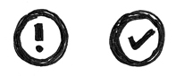

How to Get the Implementation Right.
This is what you're probably most worried about right now - but don't panic. If your design is correct, you only really need to think about the syntax here. Read on for a guide showing how you might want to approach this task.
Evidence of Development. Show your working.
You can't go from nothing to a fully working piece of code. As you've been building the program, you've probably come up against some problems - particularly in the more difficult tasks, like task 2 and 3.
Take advantage of these and SHOW YOUR PROGRESSION. If something doesn't work, that's great! Take a note of the code, why it doesn't work, and then try something different. All of the notes that you make when something goes wrong all add up here. This goes hand-in-hand with the next item...


Show systematic testing. How did you know that something wasn't quite right?
A programmers, we almost look on testing as an automatic process. You try something, and if it works then you just move on, but if it doesn't, then you go back and fix it.
That's basically what you need to show in this task. Code something. Then test it. If it works, great! Take a screenshot and move on.
If it doesn't work, great! Take a screenshot and show your code so far. Explain why you think it might have gone wrong and what you will do differently to try and get it working. Show where you got the new idea from (if you got the idea from a website or book, that is). If it was just something different you wanted to try, then just say that you came up with the idea. We're not trying to trick you - we just want to know how you came up with the idea.
Solution. So... does it work?
I can't lie, you are partially graded on whether or not the code actually works. The 'getting the code to work' isn't as important as you might think in the grand scheme of marks, but it's pretty essential to the basics.
Don't panic, just keep trying if it doesn't and make notes about it (see above). When it does - job done! Show your final code.
#
Code Organisation. Clean up your code, annotate it - and put things in meaningful places!
Just like cleaning your room, cleaning your code will do wonders for your own feeling of well being. It's also something that teachers check when they're marking!
Make sure your code is well organised. Put functions and global variables (if you need them!) at the top, and make sure the code shows how it runs. We also check whether your variables have meaningful names - though this should have been taken care of in the data dictionary! Finally, make sure you comment liberally - we want to see that you know what every single line of your code does.